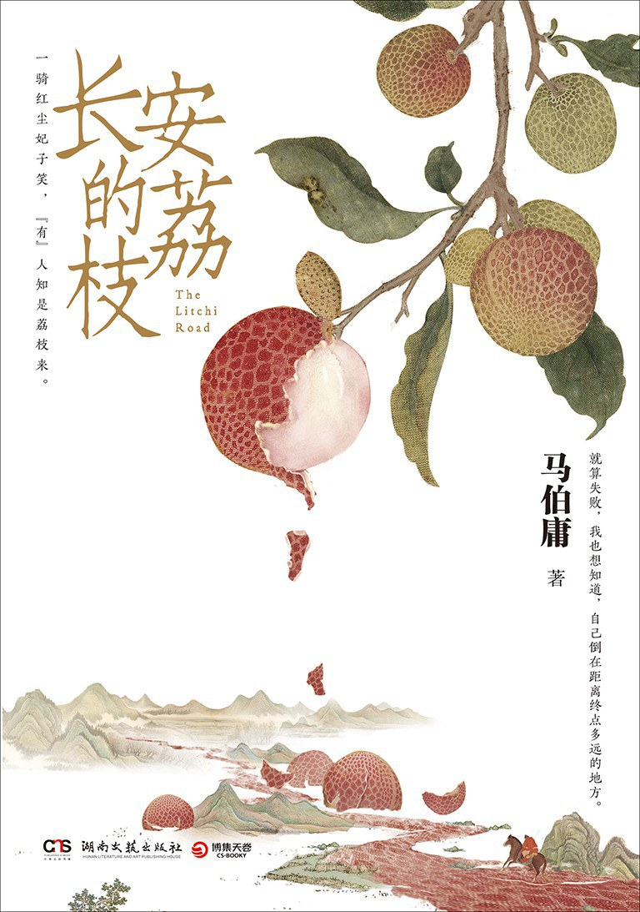

一、关于本书 #
-
《长安的荔枝》
历史文学
作者：马伯庸
简介：本书以“一骑红尘妃子笑，无人知是荔枝来”为背景，以一个小人物的视角，描绘了唐代官场里的明争暗斗，也展现了主角李善德从一开始刚接到任务时的绝望到后来的勇敢和冷静，再到最后的心灰意冷的心境变化，是一本扣人心弦的历史小说。 
二、内容分享 #
2.1 普通人的无奈与挣扎 #
与大多数历史类书籍的宏大叙事不同，本书一开篇就流露出了浓浓的“生活气息”。作为普普通通的打工一族，李善德在工作多年之后，终于在大城市买下了属于自己的一套房。
“十八年了，他终于在长安城有了一席之地，一家人可以高枕无忧了。庭中桂花树仿佛提前开放了一般，浓香馥郁之味，扑鼻而来，浸润全身。”
只可惜他历经艰辛才换来的片刻喜悦还没来得及与家人好好分享，转瞬间就被生活无情地打碎了。因同事暗算，李善德在疏忽大意之下接下了一桩荔枝使的差事——将远在岭南的鲜荔枝运到长安带给贵妃品尝。这项看似无解的工作一旦无法完成，就会落得杀头的下场，这让李善德如坠冰窖。
“一十八年的谨小慎微，只是一次的不经意，便陷入了万劫不复之地。”
看来，职场里的明争暗斗，从古至今就没有停息过，而像李善德这样的小人物则只能在历史的洪流中苦苦挣扎。
另外，与大多数普通人一样，李善德原本也是一个多才多艺的人，可在现实的压力下，也逐渐被磨平了棱角。
“上林署的同僚们没人知道，这个老实木讷的家伙，其实是一位胡旋舞的高手。年轻时他也曾技惊四座，激得酒肆胡姬下场同舞，换来不少酒钱。可惜后来案牍劳形，生活疲累，不复见胡旋之风”。
记得以前上学那会儿，自己也曾是一个兴趣涉猎颇广的人，绘画、书法、乐器、羽毛球还有游泳等都是我的爱好。后来，随着自己慢慢长大，身上所背负的压力也越来越多，当初的兴趣爱好如今已所剩无几。很多时候，其实并不是真的忙到没有时间去做这些事儿，而更多是因为在生活的摧残下，自己已没有足够的心力和热情去参与这些活动了。有时，当我们突然觉得某个人老了的时候，可能并不一定是指的生理上的“老”，而是指心老了，再不复当年的“少年心气”。在这世上，真正能够做到“出走半生，归来仍是少年”的人又能有多少呢？
最后，虽然李善德的生活里充斥着诸多苦涩，但幸运的是，他还拥有三两知心好友、有一个理解他的妻子、有一个可爱的女儿，是这些人给了李善德面对这必死之局的勇气。
“既是身临绝境，退无可退，何不向前拼死一搏，说不定还能搏出一点微茫希望。”
普通人是渺小的，也是伟大的——正是这种直面困难的智慧和勇气，让李善德不仅保住了自己和家人的性命，更是在历史的简牍中留下了浓墨重彩的一笔。
2.2 披着历史外衣的职场生存指南 #
值得一提的是，本书作者花费了大量笔墨来描写李善德与其它官员之间的工作往来，将官场里的明争暗斗描绘得淋漓尽致。“职场如官场”，对于书中所提到的一些职场斗争哲学，我认为非常值得今天的打工人们学习和效仿。
其一，当我们在工作中需要协调好各方共同促成一件大事时，一定要充分考虑到各方的利益，只有让大家都觉得自己在这个过程中能够“有利可图”，才能真正调动起团队的积极性，这样别人才会真心实意地配合你的工作。
“做官之道，其实就三句话：和光同尘，雨露均沾，花花轿子众人抬。一个人吃独食，是吃不长久的。”
在故事的一开始，当李善德接到任务后，他只想着怎么利用其它部门来帮助自己完成任务，于是便处处碰壁。后来，他明白了要将功劳分配到大家头上，并主动向领导表明这件事是大家一起做成的，于是大家终于开始纷纷响应，工作的推动也从此变得畅通无阻。
其二，我们还要学会借势，不要一味依靠自身力量。当我们发现指挥不动其它人配合一起完成工作时，要及时向领导进行反馈，并将领导的指示传递到对应的人员，而不是仅靠自己去沟通。“官大一级压死人”，当那些人知道这是出自上级的命令之后，便不敢向对待你一样如此怠慢了。在书中，当李善德没有得到杨国忠的令牌之前，大家根本都不把他当回事儿。可当这些人知道他是在帮杨国忠做事后，态度立马发生三百六十度转变，各种进行讨好，李善德的工作也得以顺利推进下去。
其三，“规矩是死的，人是活的”，我们要尊重规则，但同时我们也应知道，规则有时候也是可以变通的。在这个世界上，无论哪里，总会有一片灰色的模糊地带，是经不起规则去仔细推敲的，因为规则总是为制定规则的人所服务的，而当规则与他们自己的利益冲突时，规则可能就突然失效了。
“流程，是弱者才要遵循的规矩。”
在书中，一开始李善德处处按规章流程办事，结果差点误了事，可后来这些所谓的规则在杨国忠面前，全部便作废了。
目前，作为一名工龄一年有余的打工人，我也逐渐感受到了“公司”这台庞大而又复杂的机器是如何运转的。在公司做事，很多时候并不是空有一腔热血就能成事的，不论是领导与下属之间复杂的利益关系，还是日常工作交往中的人情世故，都能让一个单纯稚嫩的少年感受到社会的毒打和现实的残酷。
就像书中写道：
“他这时才体会到，自己做了那十几年的上林署监事，其实只窥到了朝廷的小小一角。这个坐落着诸多衙署的庞大皇城，比秦岭密林更加错综复杂，它运转的规律比道更为玄妙。不熟悉的人贸然踏入，就像落入壶口瀑布下的奔腾乱流一样，撞得头破血流。”
前几天我在网上看到了一个视频，内容主要是说“我们要松弛地上进”，我认为这便是我们普通人面对职场这一片混沌时最好的处事心态——降低期待，做事不过分追求结果，但这并不意味着摆烂，并不意味着我们要放弃自身的成长，只是以一个更加随意和长远的心态来看待这一切。
最后，除了上述提到的一些手段，在职场中更重要的还是自身能力框架的不断迭代更新，逐步构建自身不可替代的竞争力。“想要不被选择，就要成为执棋的人”，否则就会像李善德一样：
“他奔忙一场，那些人若心存歹意，他已死无葬身之地；若尚念一份人情，抬手也便救了。生死与否，皆操于那些神仙，自己可是没有半点掌握，直如柳絮浮萍。”
2.3 比利益更重要的是内心的安定 #
在故事的后面部分，当运送荔枝的计划一步步开展起来之后，原本不可能的任务逐渐变为可能，而李善德为了达成自己的目的，背弃了曾经的合作伙伴、不顾民情铺张浪费，最终活成了自己讨厌的模样。最后，任务顺利完成了，他也成功得到了杨国忠的赏识，可他却一点也不开心。
“我原本以为，把荔枝平安送到京城，从此仕途无量，应该会很开心。可我跑完这一路下来，却发现越接近成功，我的朋友就越少，内心就越愧疚。我本想和从前一样，苟且隐忍一下，也许很快就习惯了。可是我六月一日那天，靠在上好坊的残碑旁，看着那荔枝送进春明门时，发现自己竟一点都不高兴，只有满心的厌恶。那一刻，我忽然明悟了，有些冲动是苟且不了的，有些心思是藏不住的。”
“他是真的痛苦，不是为了仕途，也不是为了家人，仅仅是为了一个道理，却愁得头发全都白了。十八年了，他在长安为了生计奔走，其实并不开心。如果这么做能让他念头通达，那便做好了。”
对于某些真诚而热烈的人而言，他们是无法忽视自己的内心，心安理得地去做违心的事儿的。
个人认为，不论是为了追求个人发展而放弃自己的尊严，还是为了坚守自己的内心而放弃更大的利益，都是个人的选择，并没有对错之分，只不过作为成年人，我们要学会对自己的选择负责，想清楚自己到底要什么，不要既要又要还要，不要在将来又后悔就好。
2.4 细腻的景物描写 #
最后，本书除了扣人心弦的故事情节之外，偶尔插入的景物描写也令人深感惊艳，很多时候看似在写景，实则是在写人，以借物喻人之法，让故事充满了生命力。
下面分享几句我摘录的句子：
“这塔身自下而上盘着一条长龙，鳞甲鲜明，须爪精细。晴天日落之时，自塔下仰望，但见晚霞迷离，龙姿矫矫，流光溢彩之间有若活物一般。”
这是李善德在一个寺庙中初见杨国忠之时的场景，看似是在描写庭院中画有龙身的高塔，实则是在写李善德见到杨国忠时内心的激动和震撼。
“一匹疲惫的灰色阉马在山路上歪歪斜斜地跑着，眼前这条浅绿色的山路曲折蜿蜒，像一条垂死的蛇在挣扎。黏腻温热的晨雾弥漫，远方隐约可见一片高大雄浑的苍翠山廓，夸父一般沉默峙立，用威严的目光俯瞰着这只小蚂蚁的动静。”
这是李善德历经多次尝试，最后从长安启程前往岭南，正式开始荔枝运送的计划时，对沿途的景物描写。这条垂死挣扎的“蛇”以及这渺小的“蚂蚁”，其实就是李善德本人，写出了他最后准备进行殊死一搏的悲壮和无奈。
“可村子里和驿站一样空无一人，没有炊烟，没有狗吠，远处山坡上的田地里，看不到任何牲畜。路旁的狭小菜畦里，野草正疯了一样侵凌着弱小的菜苗。”
这是李善德在沿途检查荔枝运送线路的过程中，一间驿站的旁景象。由于朝廷的压迫，附近的居民民不聊生，于是便直接跑路了。这里描绘的野草侵蚀菜苗的景象，也正是当时社会情况的真实写照。
三、心得体会 #
自从高中开始不再上历史课之后，我已经很久没有看过历史类的书籍了，这本书给我的感觉很新奇，表面上是在写历史，但给人的感觉又是在写当下的今天，有一种古今交融的错觉。本书以一个官场小人物的视角，生动地描绘出了当时统治阶级的奢靡以及百姓生活的艰苦，其中提到的诸多“为官之道”也透露着贯通古今的智慧，让我获益匪浅。我认为一本书只要能引发我对当下生活的思考，意识到自己的问题并有所改进，那就是一本好书，毫无疑问，这是今年我目前读到的最好的一本书。